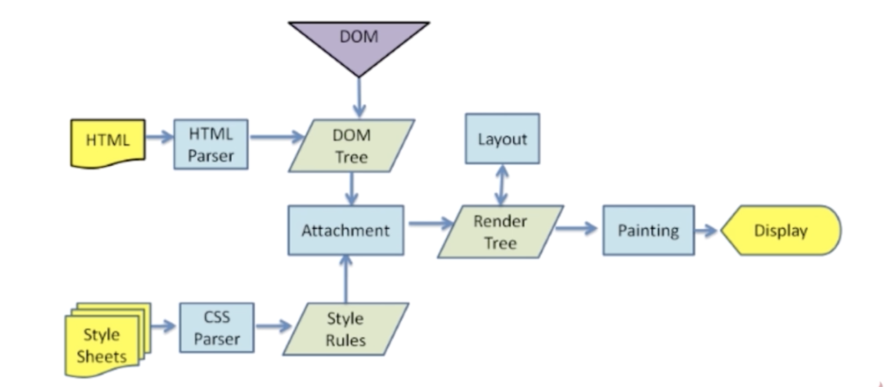

渲染机制
1.什么时DOCTYPE， 有什么作用
DOCTYPE（document type definition， 文档类型定义） doctype用来声明文档类型DTD规范的，告诉浏览器是怎样的文档类型
DOCTYPE类型有哪些：
html5:
html4.0分为严格模式、传统模式
html4.01 strict (该DTD包含所有HTML元素和属性，但不包含展示性和弃用的元素)
html4.01 传统模式 （该dtd包含所有html元素和属性，包含展示性和弃用的元素
2.浏览器渲染过程

3.重排（reflow）
定义：
DOM结构中各个元素都有自己的盒子，这些都需要浏览器根据各种样式来计算并根据计算结果将元素放到它该出现的位置，这个过程叫做relow（重排）
触发reflow场景：
1.增加、删除、修改DOM节点时，会导致reflow或repaint
2.移动DOM位置，或是做动画的时候，会出现reflow
3.修改css样式的时候， 比如修改高宽、display是否显示
4.resize窗口的时候（移动端没有这个问题）， 或是滚动的时候，可能会导致reflow
5.修改网页的默认字体时
4.重绘（repaint）
定义：
当各种盒子的位置、大小及其他属性，如颜色、字体大小等都确定下来后，浏览器于是把这些元素按照各自的特性绘制了一遍，于是页面的内容出现了， 这个过程叫做repaint
触发repaint（只要页面展示改变就会触发repaint）
1.DOM改动
2.CSS改动
如何进行减少repaint的频率？
尽量整体操作，比如通过document.fragment片段向页面中添加元素
5.布局layout
js运行机制
js是单线程的:
任务队列: 分为同步任务、异步任务
事件循环（event loop）
哪些语句会放入到异步任务队列
哪些语句放入异步任务的时机
页面性能
错误监控